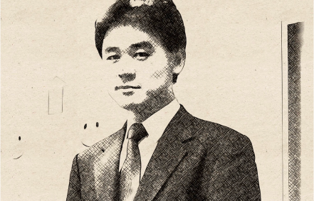
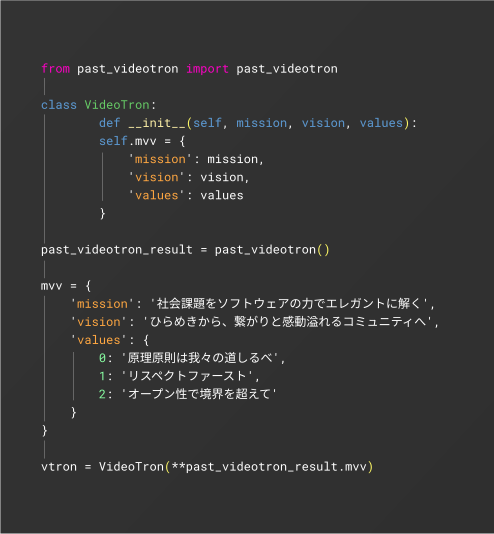

詳細
-
{Mission}
社会課題を
ソフトウェアの力で
エレガントに解く -
{vision}
ひらめきから、
繋がりと感動溢れる
コミュニティへ -
{value}
-
1.原理原則は我々の道しるべ
-
2.リスペクトファースト
-
3.オープン性で境界を超えて
-

Solving social problems
with the
of software
インターネットの誕生、IT革命、そしてAIの台頭と、技術革新は目覚ましい速度で進んでいます。 かつて電子産業が隆盛を誇っていた頃、まさかコンピュータが産業の中心になるとは、多くの人が想像していなかったでしょう。そして今、パソコンから携帯電話、スマートフォンへと進化を遂げ、私たちの生活に欠かせない存在となっています。 情報産業とは無縁だった企業が、業務効率化を追求する過程でソフトウェア企業へと変貌していくケースも近年目立ちます。弊社はこれまで、放送業の装置開発に携わってまいりました。放送方式もアナログからハイビジョン、そして4Kへと移り変わる中で、製品と開発手法も変化してきました。その変遷で培ってきた技術を活かし、新たな挑戦としてソフトウェア産業への参入を決断しました。 どのような会社へと進化していくのか、現時点では明確なビジョンを描くことは難しいです。しかし、変化を恐れず、常に挑戦し続けることで、お客様、そして、社員、皆様と共に未来を切り開いて参ります。今後とも変わらぬご愛顧とご支援を賜りますよう、よろしくお願い申し上げます。

代表取締役
廣濱 剛
弊社は放送用の装置を開発してきた中で、常に大容量のデータ処理技術を追求してまいりました。今後はメタバースなどの登場により、さらに膨大な量のデータ処理が求められる時代が到来します。変化の激しい時代だからこそ、「大容量データ処理とソフトウェア開発」を中心に、かつ基本的な技術力に忠実に、新たな価値創造に挑戦していく所存です。
ミッション・ビジョン・バリュー
ビデオトロンでは、MVV(ミッション・ビジョン・バリュー)のことをOur-Source-Codeと表現し、組織全体に組み込む自動プログラム基盤をつくっています。私たちは柔軟かつアグレッシブにお客様の抱える課題に向き合っていきます。

詳細
{Mission}
{vision}
{value}
採用とお問い合わせ
VDTには深い専門性をもちながらも、強い好奇心と広い視野をもつメンバーが集まってきています。常に新しい領域に越境し、それによって成長し続けていたい人。社会にインパクトを与える仕事がしたい人。VDTは、そんな価値観を共有できる仲間を探しています。